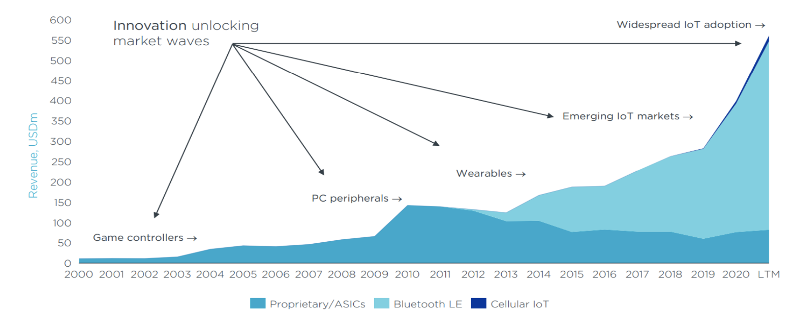
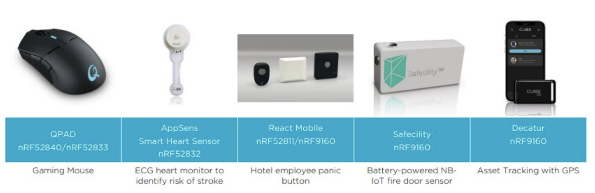
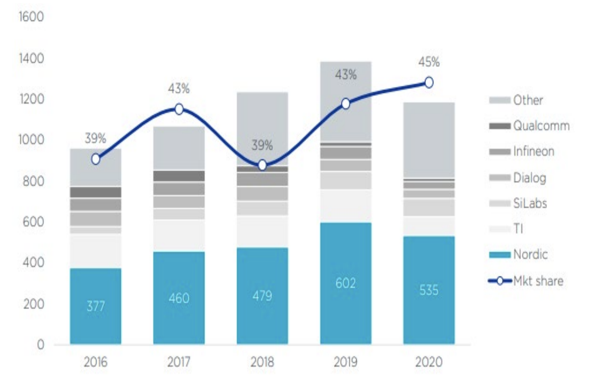
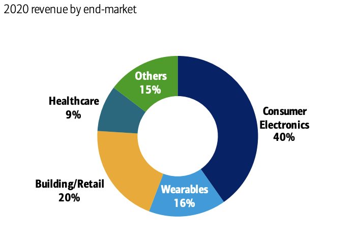
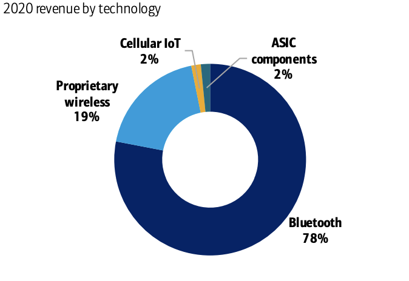
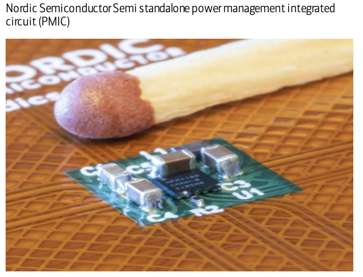
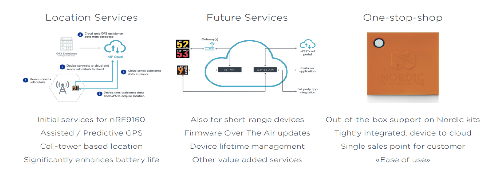

Nordic Semi是一家有代表性的物联网连接芯片提供商。在全球BLE市场中，Nordic大约占40%市场份额，处于领头羊地位。Nordic公司非常重视与终端客户的战略合作，因为它提供的BLE主控器件属于核心部件供应商，因此非常了解客户产品的应用场景和客户需求。其次Nordic非常注重产品的研发，他们提供的芯片和SDK可快速帮助客户产品导入量产，并且质量稳定，客户群的口碑很好。最后，相比于博通，高通，以及国内的Start-up芯片公司，Nordic专注于中小规模企业的需求，而不是大客户导向的商业模式。这些特征都是Nordic在近5年成绩亮眼的因素。

扩张中的BLE领导者
Nordic 专注于高增长的物联网市场，其核心无线连接芯片是低功耗蓝牙 (BLE)，占营收的 80%。BLE芯片市场广阔，应用在消费电子领域（无人机、PC 鼠标/键盘、虚拟现实等）、医疗保健（血糖监测糖尿病、血压计等）、可穿戴设备（智能手表、智能戒指等）、和建筑/零售（智能灯泡、智能门锁、非接触式支付终端、资产跟踪等）。
除开BLE，Nordic 正在向新兴市场，蜂窝、Wi-Fi 和独立电源管理等技术方向扩展产品线。这些产品正处于不同的商业化阶段，蜂窝产品线营2020年营收可占财年的 2%；Wi-Fi产品线预计要到 2023 年才能产生营收。这些扩充的产品线都是经过与合作伙伴，核心客户探讨之后谨慎开展开，并且依托现有客户群，可实现更加紧密的配合与绑定。

NORDIC BLE产品线领导之道
Nordic 与巨型半导体公司，例如博通，高通，德州仪器，恩智浦，英飞凌、意法半导体以及专业的连接/物联网芯片专家 Silicon Lab，Semteck的竞争当中，处于领导者位置。它成功地保持了在 BLE 中的领先地位，并在 2016-20 年将其份额从 39% 扩大到 45%（不包含未认证BQB产品）。Nordic能够做到这一点有以下几个原因：

Nordic活跃于SIG联盟并专注BLE市场
Nordic只销售BLE芯片。经典蓝牙一般用于高数据速率传输和流媒体音乐传输，平均功率较高，常用于笔记本电脑、智能手机和与其对应的配件市场，例如遥控器，鼠标键盘，蓝牙音响等等。BLE 专为低功耗应用而设计，如小型电池供电设备。大部分Nordic竞争对手来自传统蓝牙厂商，而他们的芯片通常可以支持 BLE，但芯片不是从低功耗和单BLE SoC角度来设计。
早期SIG 联盟BLE标准制定者之一
Nordic 是BLE 标准（当时称Wibree）开发的参与者之一（2005年）。这种早期参与者和参与，使 Nordic的贡献成为 BLE的核心技术规范。
支持大众客户/初创客户
Nordic的许多客户是每年采购数十万片的小型初创公司。它的芯片的代码量较小，没有复杂操作系统，适合中小公司创业。通过与初创客户的互动，Nordic半导体能经常接触新的和创新应用的机会，并通过客户了解到最新的市场需求。
连接未连接
Nordic芯片常用于智能踏板车、灯泡、电视遥控器，玩具等产品中。这些应用通常比较分散，也不需要大规模团队的编码工作，这意味传统的蓝牙芯片竞争对手很难高效的针对Nordic产品进行狙击，等对手看到Nordic成一定使用规模时，已经回天无力（心心之火，可以燎原）。同样，Nordic BLE 芯片是一个独立的系统，它不仅包含 BLE 无线模块，还包含独立的 MCU 和闪存。这意味着客户可以编写自己的代码，而无需从 STMicro，恩智浦、瑞萨、TI 等大型厂商购买单独的微控制器（节省开支）。
丰富的产品组合
Nordic产品丰富，从低成本到高性能，从单BLE到BLE和ZIGBEE的覆盖支持，软件SDK齐全，例程丰富，一级经销商和本土化技术支持，以及国外论坛的24小时在线支持模式。目前没有发现有能做到和Nordic一样的竞争对手。
领导地位很难被取代
一旦确立为领导者，竞争对手很短时间追赶上。因为领导者可以参与到客户未来产品的规划中，并了解客户未来对产品的要求，使其领先一步做出满足客户需求的下一代产品。
掘金IoT市场的新机会
Nordic 的短距离无线通信芯片大量用于消费类产品电子、可穿戴设备、医疗保健、建筑和工业应用。Nordic的芯片赋能这些产品能够和其他设备进行连接或“对话”，他是IoT智能设备与主机设备通信的桥梁。
短距离连接
IoT无线连接的协议众多，呈现碎片化趋势。例如，无线上网，蓝牙、低功耗蓝牙 (BLE)、LTE-M（远程）、ZigBee 等。相同的芯片通常可以支持一种或多种无线协议的需求迫在眉睫。比如BLE SoC芯片同时运行BLE，Thread、ZigBee、NFC、ANT 。 理论上，不同的无线协议适合不同的应用程序，例ZigBee 最初是为构建自动化和控制，2.4G芯片专为特定用途而设计，例如无线游戏控制器或 PC 鼠标。蓝牙用于解决附件与手机电脑的无线连接。私有2.4G芯片一直占 Nordic大部分营业收入，直到 BLE 从 2014 年开始起飞。

蜂窝物联网
Nordic的蜂窝物联网业务持续在增长，2020年，蜂窝芯片收入占总营业收入的 2%。其中的原因包括商业化一直不太成熟，并且行业生态系统、软件开发较为挑战，缓慢的认证流程和更长的客户开发周期。在该领域Nordic面临来自高通、联发科，ASR的挑战。鉴于蜂窝市场目前还处于初期阶段，很难断定Nordic的后续发展。
从技术路线上看，Nordic蜂窝网还是传统蜂窝 (4G/5G) 的对比如同经典蓝牙还是BLE的对比，两者旨在降低数据速率和功耗。因此，Nordic BLE的成功和部分 IP 可能对其蜂窝产品有利。Nordic的蜂窝客户数量在 2018 年增长了 6 倍。过去一年，已经有超过 100 家客户量产。蜂窝物联网的应用包括资产监控和跟踪、公用事业计量、工业连接/预测维护、智能城市——本质上是任何需要远程的“智能”活动连接而不是短距离的应用场景（偏工业）。

Wi-Fi
Nordic 现有产品中缺失中等距离，具有一定吞吐的无线连接芯片，即 Wi-Fi。2020年11月，Nordic收购了半导体IP公司Imagination Technologies的Wi-Fi资产（开发团队、IPassets等）。
鉴于Nordic收购了 IP（不是一家芯片公司），它仍在开发自己的第一款Wi-Fi芯片，有望在 2022 年下半年推出，收入为2023 年。
电源管理
SoC 可以划分为多个功能模块，比如，内存、处理、模拟、安全、电源管理。理论上来说，Nordic的SoC的电源管理一直是作为芯片上的一“块”。然而，在更高的负载需求下，这种内部电源管理可能不是最佳选择（双核，高速，多协议并发应用场景）。所以，Nordic在2021 年6月推出其首款专用电源管理集成电路 (PMIC)。使用优的工艺节点来生产制造专用的PMIC可以达到更高的性能和效率。充电电路和电池等附加功能也可以添加在PMIC中。如果成功，Nordic可以往低功耗模拟半导体领域迈进一步。

RF FEM
Nordic目前已经推出RF功率放大器，可以搭配其蓝牙SoC一起使用，可以达到更高的输出功率与传输距离。这些RF放大器使用低噪声放大器(LNA) 和功率放大器 (PA)构成（射频前端 RF 中的两个关键芯片FE），这些产品将拓宽Nordic传统的连接产品组合。
云服务
Nordic 于 2021 年推出了云服务业务。这些服务可以帮助工程师/开发人员使用 Nordic 芯片搭建一站式解决方案。该服务的初衷是为其蜂窝芯片提供定位服务，通过使用该云服务，客户可以移除 GPS 并从手机基站确定当前位置。或是辅助 GPS，可以更快获得结果。云服务对于 Nordic来说，是一种新的商业模式，值得期待。

结尾
元宇宙、云服务、无线音频，蜂窝物联网、Wi-Fi 和独立电源管理，FEM，与其说Nordic想复制BLE的成功，不然说Nordic正在凭借短距离无线通信的地位，正在迅速扩展与客户的粘度，加深与客户在系统层面上的商务合作。
「Bluetooth5 堂 微信交流群」
愿帮助行业圈内朋友打通无线相关的技术，市场，芯片渠道，商务对接。
集高通，Nordic，Dialog，ST，Silicon lab, NXP, AMBIQ等蓝牙芯片原厂技术，市场，销售
集华为，MTK，泰凌微，凌思微，盛源达，ASR，华普微，中颖电子芯片原厂
集Arrow，北高智，迅通，世强，利尔达等一线原厂代理FAE和业务
集小米，华米，绿米，涂鸦，雅观，百度，出门问问，京东互联网公司及方案公司研发
集蓝牙认证机构，被动器件，射频公司，以及SIG大佬
申请流程：
① 因群人数已超过限制人，请先微信扫描以下微信二维码或添加Xcoder微信号（blecoder），添加微信时请将您的个人信息进行备注，以便登记，同时也欢迎同行和我进行交流。
② 由于需要我逐个邀请入群，所以请大家耐心等待！谢谢理解与支持！